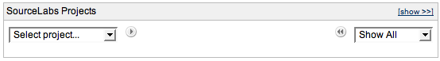
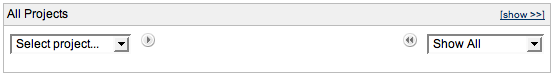
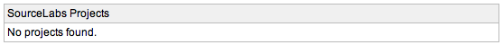

Created by Henri Yandell at SourceLabs, Inc..
Released under the Apache License 2.0 and Copyright 2007 SourceLabs, Inc.
This project uses the excellent famfamfam.com Silk icons.
A portlet for the JIRA dashboard that provides a concise way to list a set of projects.
Its expected use case is for saving real estate on big JIRA installations - specifically public ones such as the Apache JIRA and the Codehaus JIRA.
It provides the following functionality:
Version 1.0.2 was released on the 26th of June 2007. It sorted categories and took care of errors when there were no proejct or category descriptions.
Version 1.0.1 was released on the 13th of April 2007. It made sure tooltips were properly escaped and didn't break the rendering.
Version 1.0 was released on the 5th of April 2007.
Install the plugin by downloading the plugin jar, place it in your $JIRA/WEB-INF/lib/ and giving your JIRA a restart.
Once it's installed you can add it to your dashboard by selecting the Selected Filter List portlet. Please follow the instructions from Atlassian for configuring your personal dashboard or the default dashboard.
The source is available for perusing by downloading the source zip and unpacking.
Please report such things to the project's JIRA, mail these to me at henri-at-sourcelabs.com, or add them as comments to the JIRA plugin page.
Initially, the portlet will look something like this when a user hits a page:
By clicking on the [show >>] link, they can open up the tabular view and get something that looks like this:
On a private JIRA - ie) one which does not allow anonymous users to see projects, the portlet will currently look as follows:
